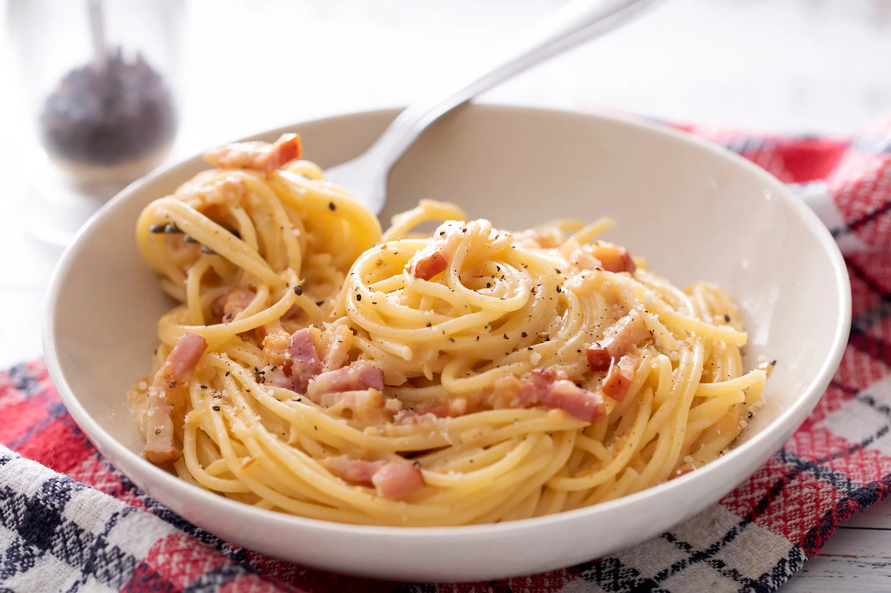

In a bowl, mix maida flour with salt and turmeric. Create a well in the center and add ghee. Mix with fingertips until resembling breadcrumbs. Gradually add warm water and knead into a stiff dough. Let it rest for 20 minutes covered with a damp cloth.
Heat oil in a pan, add mustard seeds and let them crackle. Add chopped potatoes and peas, season with turmeric, chili powder, salt, and amchur powder. Cook until potatoes are tender and slightly golden. Mix in fresh coriander. Cool completely.
Roll the dough into thin circles and cut in half. Form each half into a cone, fill with about 1 tablespoon of potato mixture, seal the edges with water. Ensure they are tightly sealed so filling doesn't escape during frying.
Heat oil in a deep pan to 175°C. Carefully place samosas in batches, ensuring they don't crowd the pan. Fry for about 5-7 minutes until they turn golden brown on all sides. Remove with a slotted spoon and drain on paper towels.
Serve the crispy samosas while hot with mint-coriander chutney or tamarind chutney. They can be enjoyed as an appetizer, snack, or side with tea. Best consumed immediately for maximum crispiness.
💡 Chef's Tip: For extra crispy samosas, keep the oil temperature consistent. You can prepare samosas in advance and refrigerate them before frying. Serve with mint chutney or sweet tamarind chutney for the perfect taste.